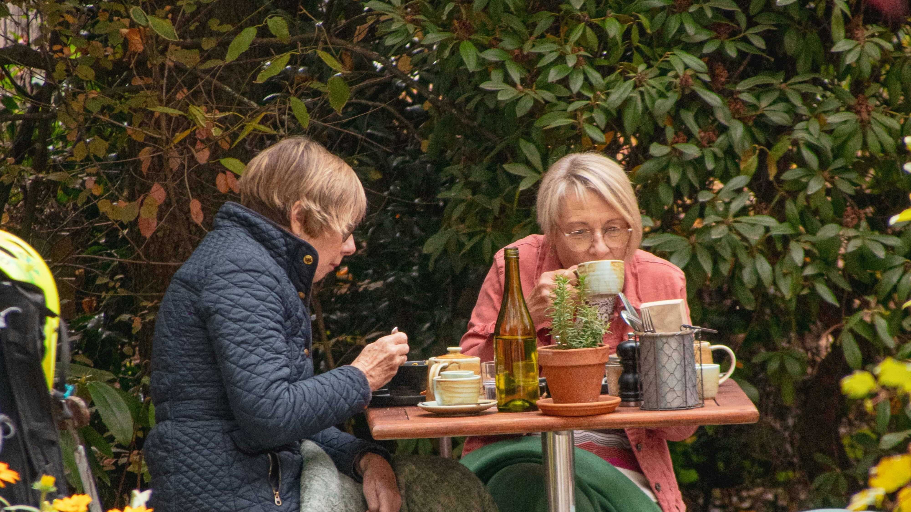

Inspiración global para un problema local
La epidemia de la soledad no es exclusiva de Chile, pero la forma en que decidimos enfrentarla definirá nuestra calidad como sociedad en las próximas décadas. En la isla de Okinawa, Japón, existe una tradición milenaria conocida como Moai. Originalmente creada para agrupar recursos financieros, hoy en día se ha transformado en una red de seguridad social, emocional y de salud irremplazable.
Un Moai es un grupo de personas que se comprometen a apoyarse mutuamente durante toda la vida. Este concepto, sumado a las costumbres comunitarias de regiones como Cerdeña en Italia, nos demuestra que el antídoto contra el aislamiento no proviene de la tecnología ni de las pantallas que consumen la atención diurna de nuestros adultos mayores, sino de la estructuración consciente de vínculos vecinales y de amistad a largo plazo.
Los 3 Pilares para un "Moai Chileno"
Compromiso Vecinal
Transformar el concepto de "vecino" en un rol activo. Saber quién vive al lado, conocer sus rutinas y estar atento a su bienestar físico y mental, creando una primera red de alerta temprana frente a emergencias.
Apoyo Bidireccional
No se trata de caridad infantilizadora. El apoyo debe fluir en ambas direcciones. Mientras los más jóvenes pueden asistir con logística o tecnología, los adultos mayores aportan experiencia, consejo y contención.
Frecuencia Estructurada
La soledad se combate con consistencia. Establecer reuniones fijas, ya sea para tomar el té, jugar cartas o caminar por el barrio, asegura que el encuentro deje de ser casual y se convierta en una costumbre arraigada.
"En culturas como Okinawa o Cerdeña, los hábitos de apoyo mutuo son contagiosos. El gran desafío comunicacional de Chile es lograr adaptar esas ideas milenarias a nuestra realidad, transformando la empatía en una práctica diaria."
